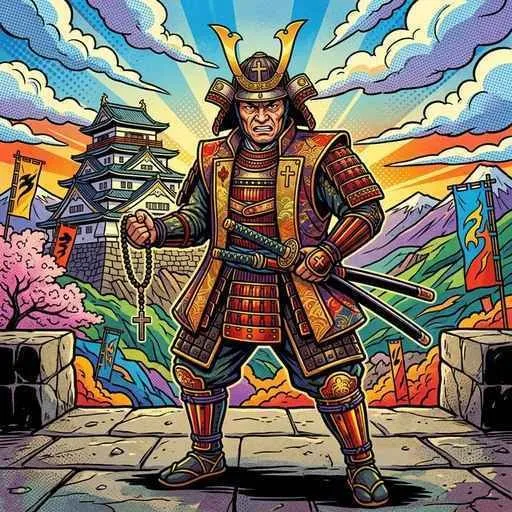

16. 江戸幕府�E成立と支配�E仕絁E��
豊�E秀吉�E死後、天下�E要E��をめぐって再�E日本は二�Eされました。これを勝ち抜いた徳川家康が開ぁE��「江戸幕府」�E、その後紁E60年も�E間、戦争�EなぁE��和な時代を維持することになります。今回は、江戸幕府がどのようにして大名や農民を厳しくコントロールし、E��期政権の土台を築き上げた�Eかを解説します！E/p>
1. 関ヶ原�E戦ぁE��江戸幕府�E成竁E/h2>
豊�E秀吉が亡くなると、五大老�E筁E��で実力No.1だっぁEspan class="marker-orange">徳川家康�E�とくがわいえやす！E/span>と、豊�E家を守ろぁE��する石田三�E�E�いしだみつなり）らの対立が激しくなりました、E/p>
① 関ヶ原�E戦ぁE��E600年�E�E/h3>
1600年、美濁E��岐�E県）�E関ヶ原で、徳川家康玁E��る「東軍」と、石田三�E玁E��る「西軍」が激突しました。この戦ぁE�E「天下�Eけ目の戦ぁE��と呼ばれ、�E国の大名が二手に刁E��れて戦ぁE��したが、西軍�Eの裏�Eりなどもあり、わずか1日で東軍（家康側�E�が大勝利を収めました、E/p>
② 江戸幕府�E誕生と豊�E氏�E滁E��
関ヶ原�E戦ぁE��勝利した徳川家康は、Espan class="marker-yellow">1603年に朝廷から征夷大封E��に任命され、江戸�E�東京�E�に幕府を開きました。家康はそ�E後、大坂�Eの陣・夏�E陣�E�E614、E615年�E�において、大坂城に拠る豊�E秀頼らを滁E��し、国冁E��に徳川氏�E絶対皁E��支配権を示しました、E/p>
 図1�E�天下�E要E��をめぐって東軍と西軍が激突した「関ヶ原�E戦ぁE���Eイメージ
図1�E�天下�E要E��をめぐって東軍と西軍が激突した「関ヶ原�E戦ぁE���Eイメージ
2. 大名を支配する仕絁E���E�幕藩体制�E�E/h2>
江戸幕府�E、封E���E直接支配する土地�E�幕領）�Eほかに、各地の土地を大名に支配させました。大名�E支配する地域や絁E��を藩�E��Eん！E/span>と呼び、この幕府と藩が協力して日本全国を支配する体制めEspan class="marker-yellow">幕藩体制�E��Eく�EんたぁE��ぁE��E/span>と呼びます。大名に対しては、以下�E厳しい「アメとムチ」�E政策を行いました、E/p>
幕府�E、大名を徳川家との親寁E���E�信頼度�E�に応じて�E�種類に刁E��し、謀反を防ぐために配置を厳しく工夫しました、E/p>
 図2�E�江戸周辺めE��通�E要地を譜代大名で固め、外様大名を遠方に追ぁE��った大名�E置のイメージ 第2代封E���E徳川秀忠の時代�E�E615年�E�に、大名が守るべき法律である武家諸法度�E��EけしめE�Eっと�E�E/span>を制定しました。これにより、大名が勝手に城を修琁E��ることめE��大名同士が幕府に無断で結婚すること�E�同盟を結�Eのを防ぐためE��が厳しく禁止されました、E/p>
第3代封E���E徳川家光（とくがわいえみつ�E�E/span>は、大名に対し、E年おきに江戸と自刁E�E領地を往復することを義務付けました。これを参勤交代�E�さんきんこぁE��ぁE��E/span>と呼びます。大名�E正妻めE��男は「人質」として江戸に住まわされました、E/p>
大名�E多くの家臣を連れて大名行�Eを行い移動しなければならず、旅費めE��戸での滞在費として**莫大な費用�E�藩の財政の半�E近く�E�を強制皁E��使わされました**。これにより、大名�E財政を圧迫し、幕府に反抗する軍事力を蓄えさせなぁE��ぁE��したのです、E/p>
幕府�E、社会�E秩序を固定化し安定させるため、�E農刁E��をさらに強化した厳しい「身刁E��度」を定めました、E/p>
※これら�E身刁E��は別に、制度の外�Eに置かれ厳しく差別された人、E��「えた」「�Eにん」などと呼ばれた人、E��が存在しました。幕府�E、身刁E��の対立や差別を意図皁E��維持することで、支配されてぁE��人、E��団結して幕府に反抗するのを防ぎました、E/p>
農村�E百姓たちに対しては、年貢を確実に取り立て、犯罪を防ぐために、近隣の�E�世帯程度を１つのグループとする五人絁E��ごにんぐみ�E�E/span>を絁E��させました、E/p>
もし絁E�E中の�E�人が年貢を納められなかったり、犯罪を犯したりした場合、E*グループ�E全員が連帯責任**を取らされて厳しく処罰されました。これにより、お互いに監視し合う社会を作った�Eです、E/p>
🔥 こ�E単�EのチE��ト対策�E暗記�EコチE/p>
① 大名�E配置�E�親藩・譜代・外様！E/h3>
② 武家諸法度�E��EけしめE�Eっと�E�E/h3>
③ 参勤交代�E�さんきんこぁE��ぁE���E義務化
3. 厳しい身刁E��度と農民�E支酁E/h2>
身刁E/th>
特徴と役割
武士�E��Eし！E/td>
支配階級。名字を名乗り刀を差す特権�E�E*名字�E帯刀**�E�や、無礼な町人・百姓を斬っても�E罰されなぁE��権�E�E*刁E��捨て御允E*�E�を持ち、政治と軍事を拁E��、E/td>
百姓（�EめE��しょぁE��E/td>
全人口の紁E割を占める農民など。重ぁE��貢�E�収穫の4割、E割�E�を納める義務があり、衣服や食べ物、行動まで細かく制限されました。�E作農である「本百姓」と、小作農である「水呑百姓」に刁E��れます、E/td>
町人�E�ちめE��にん！E/td>
城下町に住�E職人めE��人。税（町役�E�を納め、商工業を担当しました、E/td>
① 五人絁E��ごにんぐみ�E�による共同責任